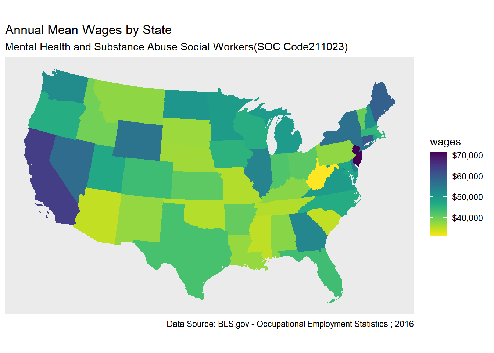

library(tidyverse) # Tidyverse for Tidy Data
library(readxl)
library(tigris)
library(sf)
library(viridis)
library(ggplot2) Repeating steps from the previous section, using the tigris package, get Census Tiger shapefiles for census geographies.
us_geo <- tigris::states(class = "sf")As mentioned before, the data are from the Bureau of Labor Statistics. These data are stored in an excel file in the data directory of the repository: data/OES_Report.xlsx.
Again, from the previous section you will see how these data were gathered, loaded, transformed, and joined.
Salary4Helpers <-
read_excel("data/OES_Report.xlsx",
col_types = c("text", "numeric"),
skip = 4)
Salary4HelpersAs before…
BlsWage_ToJoin <- Salary4Helpers %>%
rename(Area = "Area Name") %>%
rename(wages = "Annual mean wage(2)") %>%
mutate(State = gsub("\\(\\d{7}\\)", "", Area)) %>%
filter(wages != "NA_character_") %>%
select(State, wages)As before, using the append_data() function of the tmaptools package, append BLS data to the previously loaded shape object
HelperShapeObject <- append_data(us_geo, BlsWage_ToJoin,
key.shp = "NAME",
key.data = "State")
as_tibble(HelperShapeObject)As before, filter to only the contiguous 48 states + D.C.
contiguous_states <- HelperShapeObject %>%
filter(REGION != 9) %>%
filter(STUSPS != "AK") %>%
filter(STUSPS != "HI")
Using the USA_Contiguous_Albers_Equal_Area_Conic_USGS_version projection for the continental US. EPSG:5070
contiguous_states %>%
st_transform(5070) %>%
tm_shape() +
tm_polygons("wages", id = "Name")In this section we introduce making shapefiles with ggplot2. ggplot2 is one of the more popular and broadly distributed graphics packages used in the R community. I also reveresed the direction of the color scale. After consulting with my visualization colleagues it seems this may have been a non-standard action on my part. But I leave the direction argument here for the curious.
contiguous_states %>%
ggplot(aes(fill = wages, color = wages)) +
geom_sf() +
coord_sf(crs = 5070) +
scale_fill_viridis(option = "viridis", direction = -1) +
scale_color_viridis(option = "viridis", direction = -1)
This session inspired by https://www.computerworld.com/article/3175623/data-analytics/mapping-in-r-just-got-a-whole-lot-easier.html